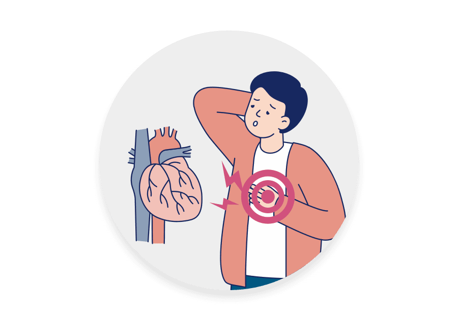
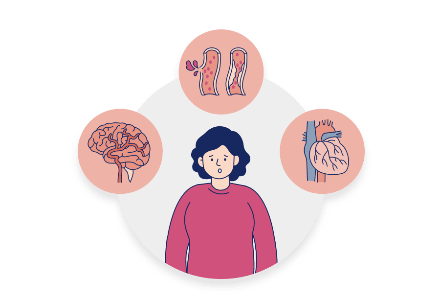
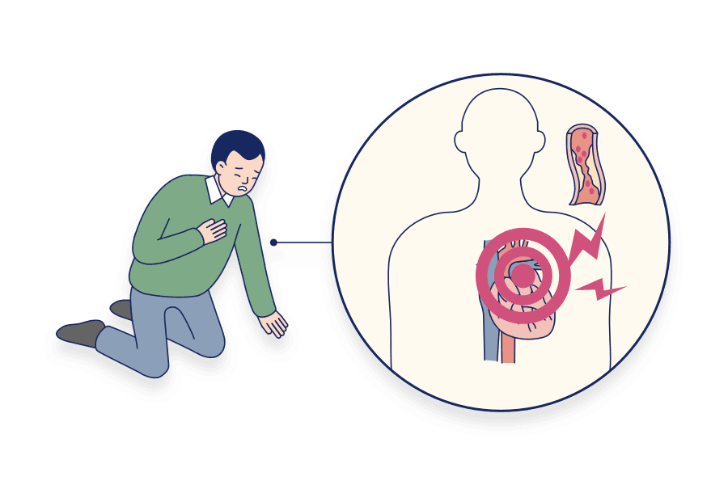
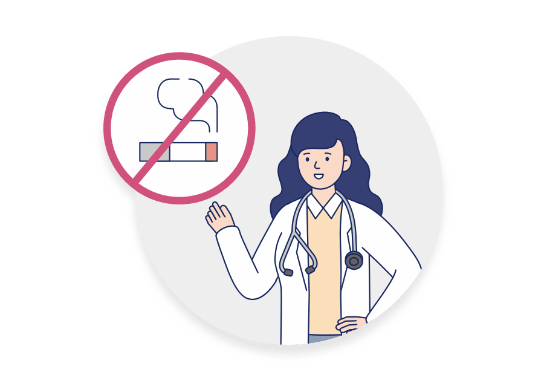
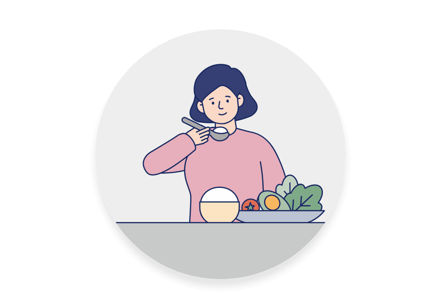
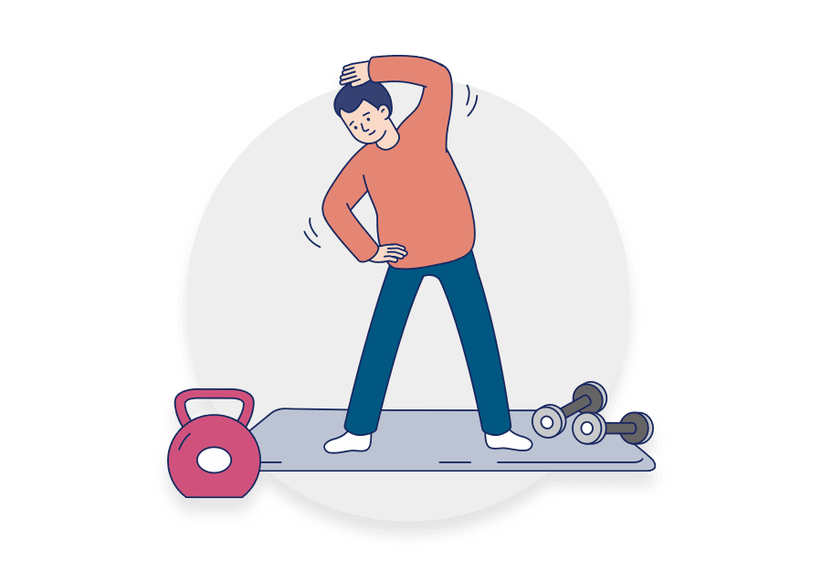

고혈압은 중·노년층의 질병으로 여겨져 왔지만, 젊은 층의 비만, 흡연, 스트레스 등의 생활 습관으로 인해 혈관 노화가 빨라지고 있습니다.
이에 따라 고혈압 등 질병의 발생 빈도 역시 증가하기 때문에 20·30세대부터 혈관 관리를 해야 합니다.
고혈압이 위험한 이유는 각종 합병증의 위험이 있기 때문입니다.
고혈압의 가장 큰 합병증은 뇌출혈과 심근경색입니다.
심장 질환의 대부분은 혈관과 연관되어 있는데, 관상동맥이 막히거나 좁아져 산소가 제대로 공급되지 못할 때 합병증의 위험이 커집니다.

20~30대는 혈압 측정의 기회가 적은 데다 본인이 건강하다고 자신하는 경우가 많으므로 미리 관리와 치료가 필요합니다.
또한 젊은 나이의 심근경색은 급사로 연결되는 경우가 많기 때문에 더욱 유의하여 대비해야 합니다.

혈압이 높아지면 우리 몸에서는 변화가 일어납니다.
뇌졸증
먼저 혈관이 얇아집니다.
벽이 얇아진 혈관은 터지기 쉽고 뇌혈관이 터지면 뇌출혈로 이어지게 됩니다.
심근경색
심장에 과부하가 생깁니다.
이에 따라 심장 근육이 두꺼워지면서 영양분과 산소가 더 많이 필요하게 됩니다.
하지만 압력이 높아진 혈관 벽은 산소 공급을 제대로 하지 못하고 이는 심장 근육의 조직이나 세포가 죽는 심근경색으로 이어집니다.

금연
흡연은 전신 혈관 건강을 매우 나쁘게 하는 근본 원인이기 때문에 지금 당장 금연을 시작하는 것이 좋습니다.

육류 대신 과일, 채소 섭취
포화지방, 콜레스테롤, 소금, 알코올, 지방이 많이 함유된 육류 섭취는 줄이고 과일, 채소, 곡물 등의 다양한 영양분을 섭취해야 합니다.

주 5회 이상, 매일 30분 이상 운동
유산소 운동을 통해 적정 체중을 유지해야 합니다.
주 5회 이상 매일 30분 이상의 유산소 운동이 도움이 됩니다.
